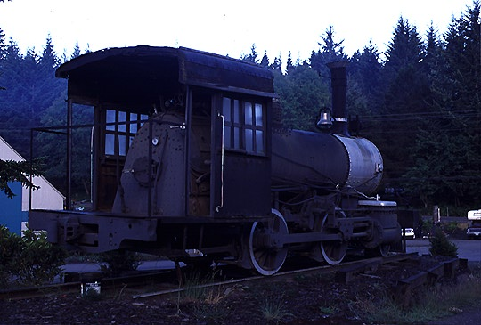

Last updated: 20 June, 2015
| Builder: | ALCO (Cooke) |
| Build #: | 56181 |
| Date: | 12/1916 |
| Engine #: | 12 (23) |
| Railroad: | Marble Cliff Quarries |
| Website: | |
| Location: | Siuslaw Auto & Towing 84829 Hwy 101 Florence, OR 97439-8434 (There is no evidence the locomotive is associated with this address) |
| GPS: | 43.937749, -124.104470 |
| Status: | Static Display |
| Notes: | I saw this locomotive alongside Hwy 101 on July 22nd, 2015. It is visible on Goggle Earth as of 3 Sep, 2025 |
This small 0-4-0T was built by ALCO for the Marble Cliff Quarries Co as #23 at Marble Cliff, OH. Later, it was renumbered to #12, and sold in the 1960s to Donald Davis of Poneto, IN. In 1983, Al Foglio of Milwaukie, Oregon purchased the locomotive. Then in 1996 Mark Acuff purchased the locomotive from Foglio's estate and moved it to Hillsboro, Oregon. Since the time of this photo, the locomotive has been moved into a shop bay so it can be worked on year-round.
| Class: | |
| Gauge: | 4'-8½" |
| F.M.Whyte: | 2-4-0T |
| Drivers: | 44 |
| Gear Ratio: | |
| Tractive Effort: | 21,360 |
| Weight: | 97,000 |
| Weight on Drivers: | |
| Length: | |
| Boiler: | |
| Cylinders: | 16x24 |
| Top Speed: | |
| Fuel: | |
| Fuel Type: | Coal |
| Water: | |
| Steam psi: | 180 |